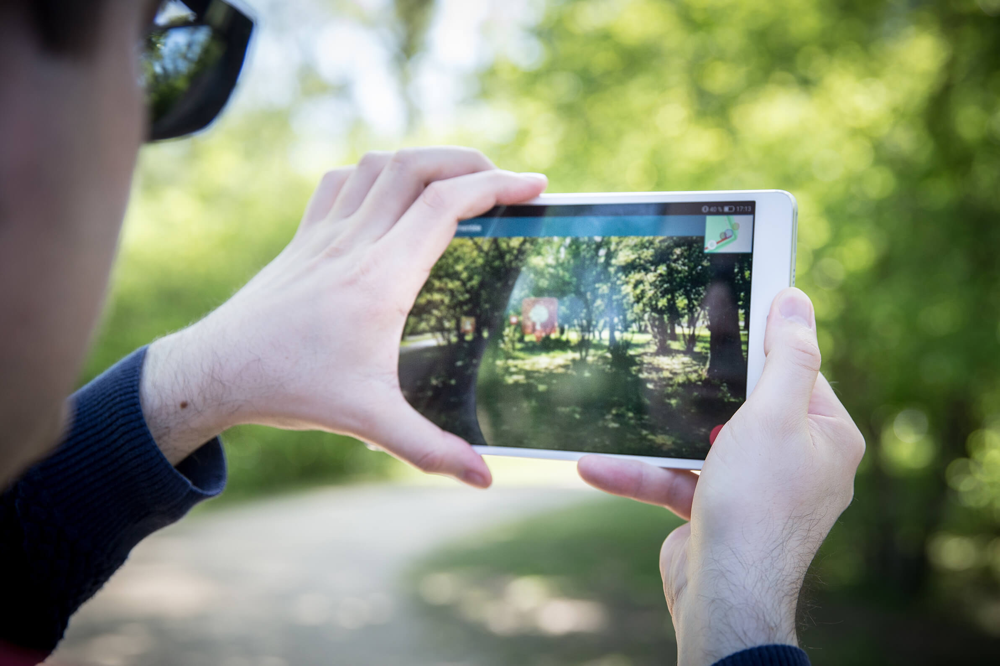
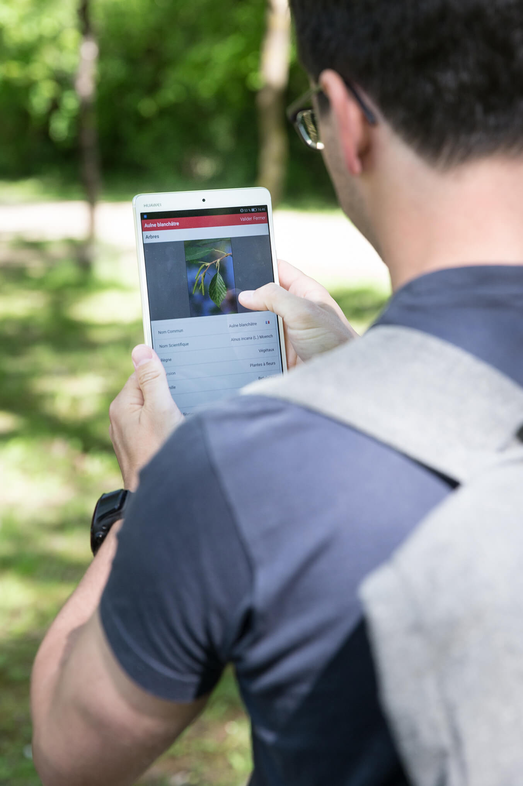
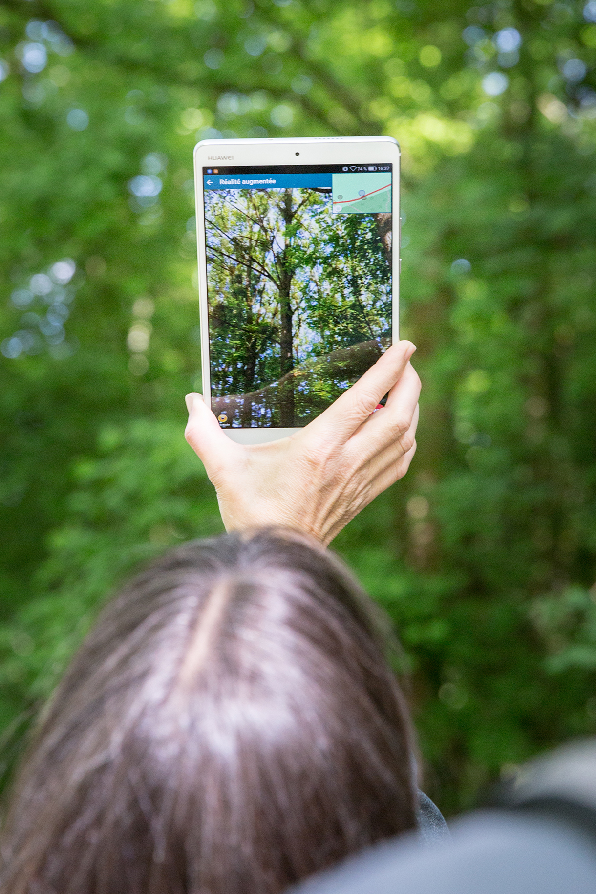
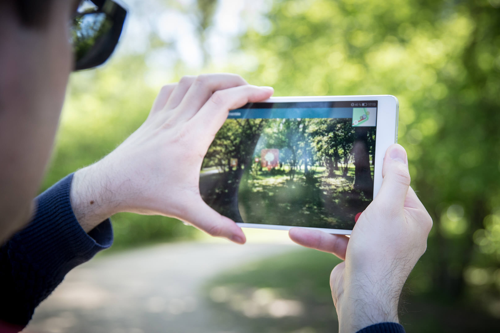
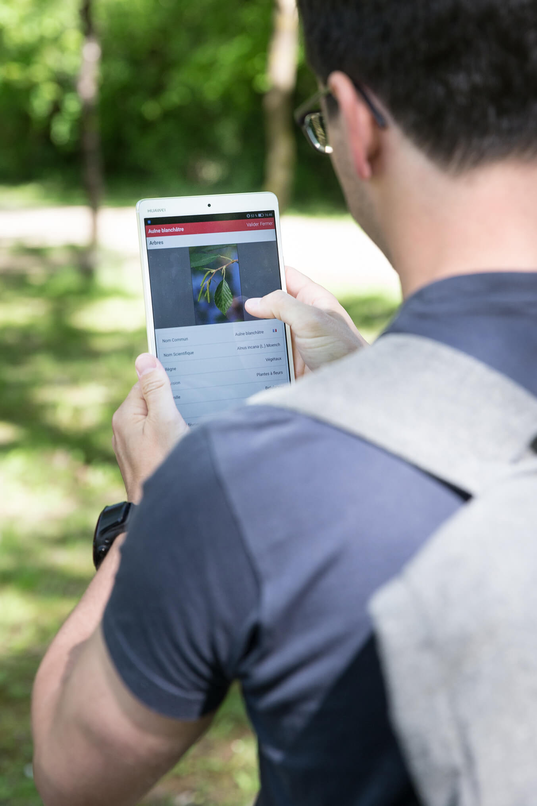
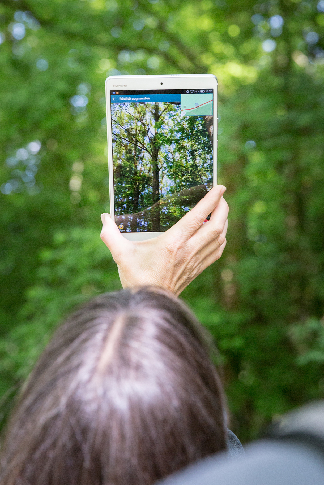
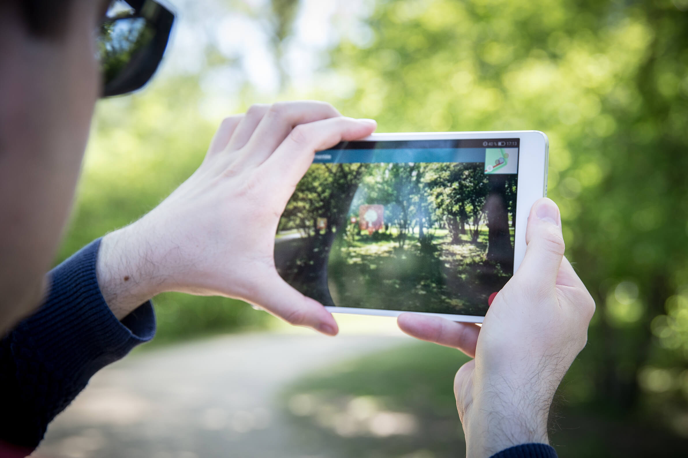
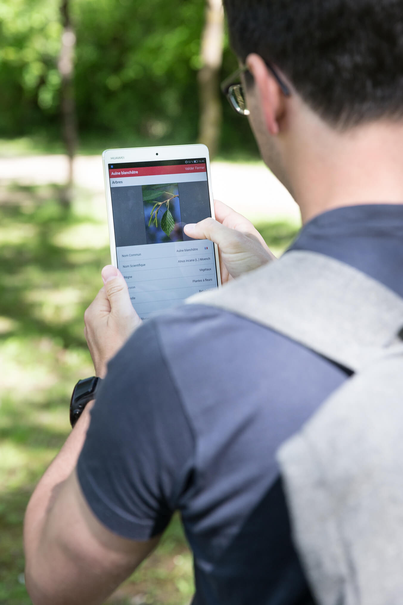
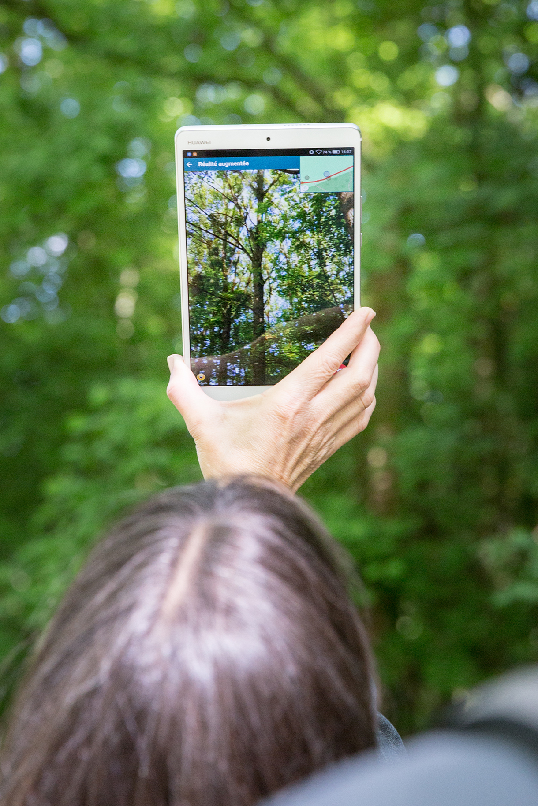

1Promenade du sentier
2 Réalité augmentée
3 Information sur l'espèce



Observation des espaces naturels au travers de la vision caméra de l'appareil (smartphone, tablette) avec superposition d'éléments virtuels.
Ces éléments sont des points d'intérêts biodiversité qui sont positionnés dans la vue selon la réalité du terrain.
Leur icônographie, dynamique et interactivité offrent à l'utilisateur des informations et connaissances sur la biodiversité en présence, aux alentours du lieu d’observation.
Le concept BioSentiers est développé par une équipe interdisciplinaire de la HEIG-VD regroupant des compétences des instituts MEI et INSIT, alliant les technologies des médias à celles de l’information géographique.
 




